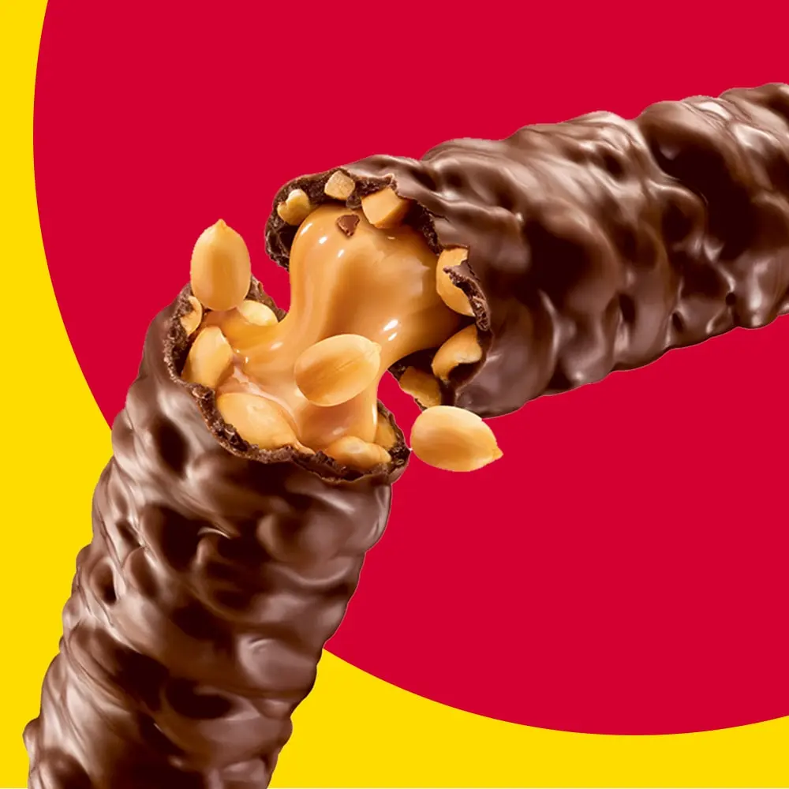
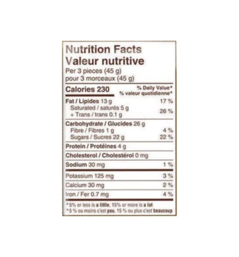

The History of Oh Henry!
Lore has it that the name was derived from that of a randy young man who made frequents visits to the original manufacturers – the Williamson company – less for sugary sweets and more to flirt with the eye candy who worked on the assembly line. This leaves us to assume that the young man’s name was — you guessed it — Henry. But certain proof eludes us.
Perhaps a more credible theory is that the candy bar was named after the owner of the now defunct Peerless Candy company. The owner’s name was Tom Henry and in a vainglorious move, created the Tom Henry Bar. It was a short-lived venture as he sold the rights to the candy bar in 1920 to the Williamson Candy who changed the name to Oh Henry.